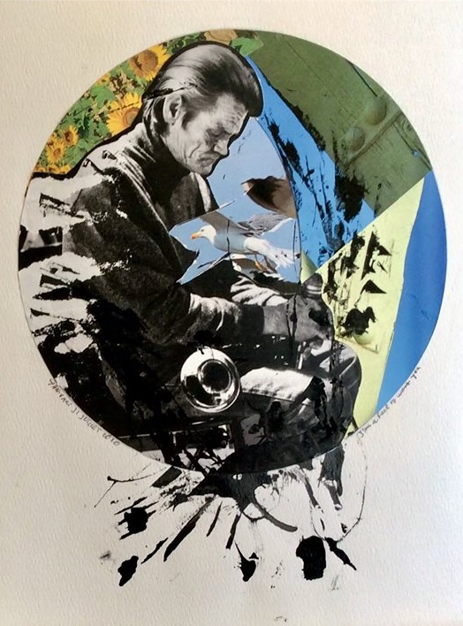
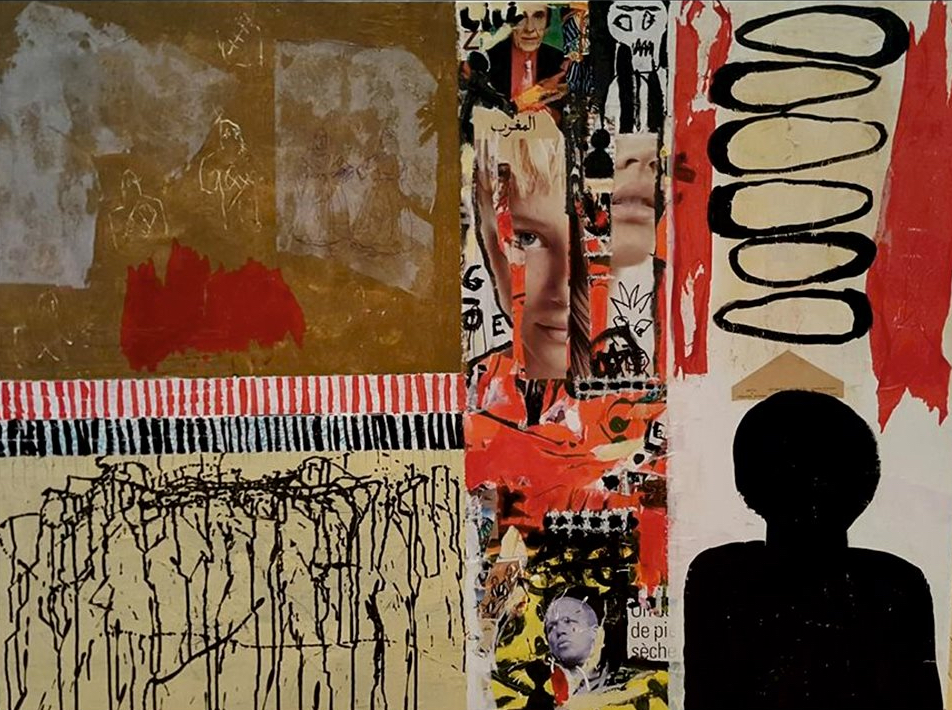
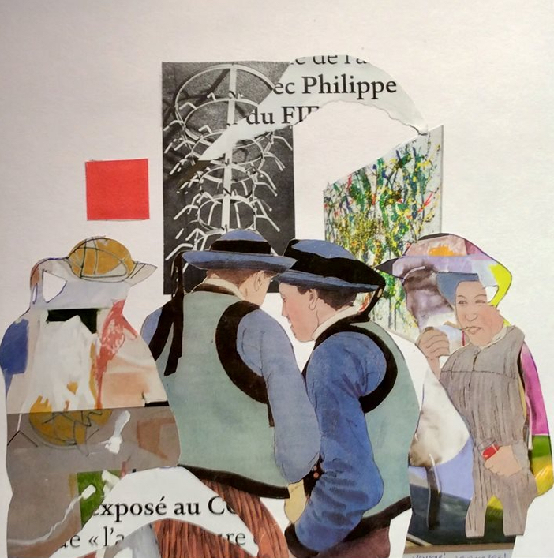
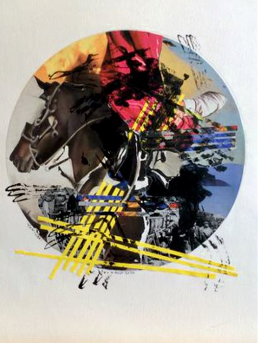

OPENWALL 2021
VIRTUAL EXHIBITION
JEAN-MARIE MONCELET
JEAN-MARIE MONCELET
JEAN-MARIE MONCELET
Exhibitors: ank VLASBLOM bernadette MORAND christine VERHAERT elena DRAGULELEI george ANDROUTSOS heber PASSERHAUT jette lili HOLLESEN laslo KOSCSO leonardo PATRUNO madeleine WORIES mami KAWASAKI manuel ortega OYONARTE françoise BRACKE mária HANUSOVSKA mohammad EUNUS monique VIRELAUDE muriel MASSIN ricardo ZEBALLOS sandee JOHNSON syporca WHANDAL david RU lino PORRARI eva GYORFFY wolfgang KAHLE pascale MORELOT - PALU barbara LO - FARO nancy DRIGOTAS christopher PADGETT HUNNICUT echi AABERG jean-claude ZANNONI ezio cascinArte FOGLIA pien van der BEEK margaret FOREST irén GEDEON cvetka HOJNIK henk van VESSEM tadeusz BARANOWSKI monique THOMAS YS keith KIM carolina ITURROSPE ibrahim BARGHOUD yuri MARUSHKIN jean - marie MONCELET

Supporters: Sandee JOHNSON Claude SMITH Gyula Mihály ÁGH Christopher PADGETT HUNNICUTT